2025 Kokonaistulokset
MiniKids
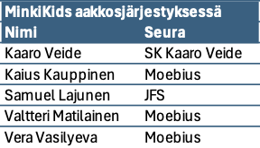
Kids
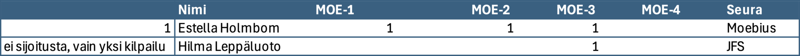
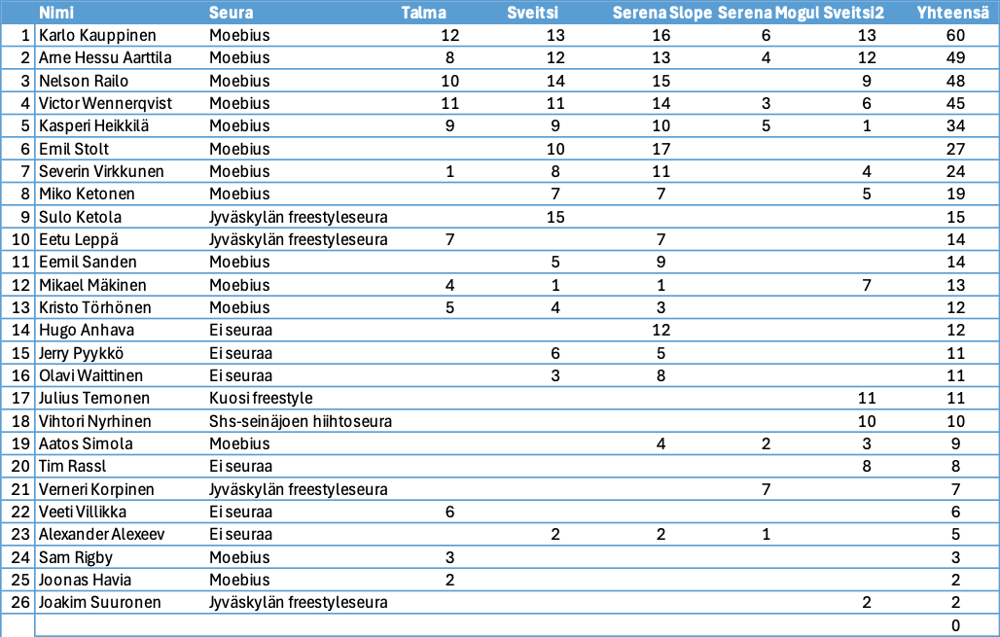
Rookies
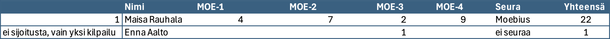
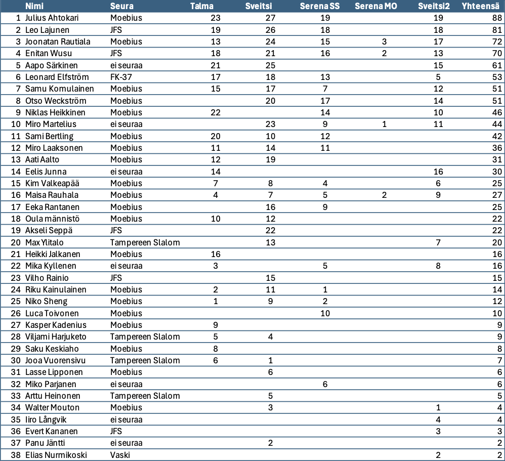
Pro
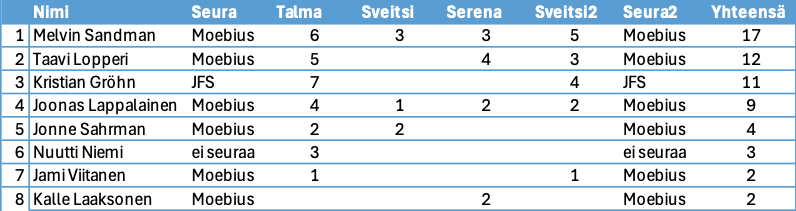
Talma 5.4.2025
Joudumme valitettavasti perumaan SkiTourin viimeisen osakilpailun aikaisen kevään suljettua Talman ennen aikojaan.
Ensi kaudella jatketaan!
Yhteystiedot
Heikki Rauhala, 0407692277, info@moebius.fi, moebius.fi, @moebiusfreestyle
Tulokset SkiTour Sveitsin Hiihtokeskus 15.3.2025
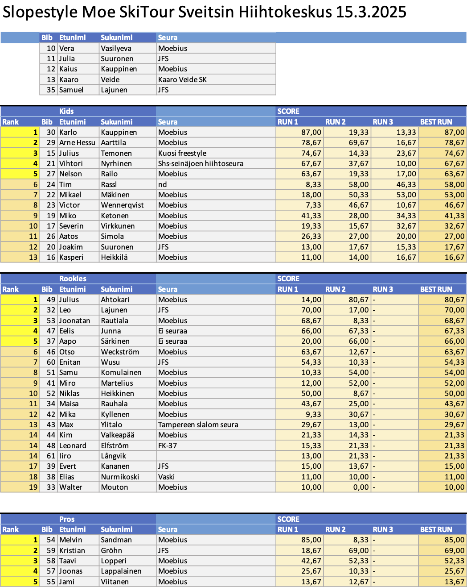


Fearless Finns ja Moe SkiTour Sveitsin hiihtokeskus 15.3.2025
Tervetuloa Moen järjestämään Fearless Finns Slopestyle kilpailuun Sveitsin hiihtokeskuksessa!
Kilpailu on osa Fearless Finns Freeski touria ja Moe SkiTouria. Kilpailu lasketaan hyppyrilinjassa, johon rakennetaan reilit ja hypyt samaan laskuun.
Fearless Finns kilpailukiertue on kansallinen kilpailukiertue ja osallistuakseen laskijalla on oltava voimassa oleva kilpailulisenssi tai Skipassi.
Lue lisää lisenssivaihtoehdoista ja skipassista Skisport Finlandin sivuilta
.
Sarjat
Fearless Finns kisoissa kilpaillaan tyttöjen ja poikien sarjoissa ikäluokittain:
Nuorten sarjoissa palkitaan kolme parasta.
Skisportin ohjeiden mukaan MiniKids-sarjaa ei pisteytetä, vaan kaikki saavat diplomin ja henkilökohtaisen palautteen.
Huomattavaa myös että Fearless Finns Freeski tourin kisoissa sauvat ovat pakollisia Rookie ja Pro -sarjoissa. Ilman sauvoja tehdyt suoritukset pisteytetään kaatuneiksi.
Ilmoittautuminen
Ilmoittautumiset keskiviikkoon 12.3.2025 mennessä tällä nettilomakkeella
.
Kilpailu on ennakkoon ilmoittautuneille Freestyleseura Moebius ry:n jäsenille ilmainen.
Muille ennakkoilmoittautumismaksu 10 € maksetaan Freestyleseura Moebius ry:n tilille:
IBAN: FI09 8000 9710 2213 95
BIC: OKOYFIHH
Viestiin “SKITOUR4” ja ilmoittautujan nimi.
Paikan päällä viimehetken ilmoittautumismaksu kaikille 20 €.
Aikataulusuunnitelma
10.00 Lipunmyynti ja hissit aukeavat, numeroliivien jako kilpailutoimistossa hiihtokoulun mökissä
10.15 Kilpailijakokous molemmat lajit hiihtokoulun mökin edessä
Vapaat harjoitukset
11.20 Slopestyle MiniKids ja Kids, 3 laskua, paras tulos jää voimaan
Lounas Rinneravintolassa nopea ja ravitseva keittolounas
13.20 Slopestyle Rookie ja Pro, 3 laskua, paras tulos jää voimaan
15.30 Palkintojenjako rinneravintolan edessä
Tiedottaminen ja tulospalvelu
WhatsApp-ryhmä Fearless Freeski 2024. Viralliset tulokset SSF:n nettisivuilla. Tulokset julkaistaan myös tällä nettisivulla.
Talkoot
Tarvitsemme kilpailuiden järjestämiseen myös paljon talkooväkeä, talkooväen ilmoittautuminen talkooväen ilmoittautumislomakkeella
.
Hissiliput
Sveitsin hiihtokeskuksen lipunmyynnistä saat päivälipun numeroliiviä vastaan alennushintaan 32 €.
Hiihtokeskuksessa on käytössä Axess-etäkortti.
Yhteystiedot
Heikki Rauhala, 0407692277, info@moebius.fi, moebius.fi, @moebiusfreestyle
Tulokset SkiTour Serena 1.3.2025
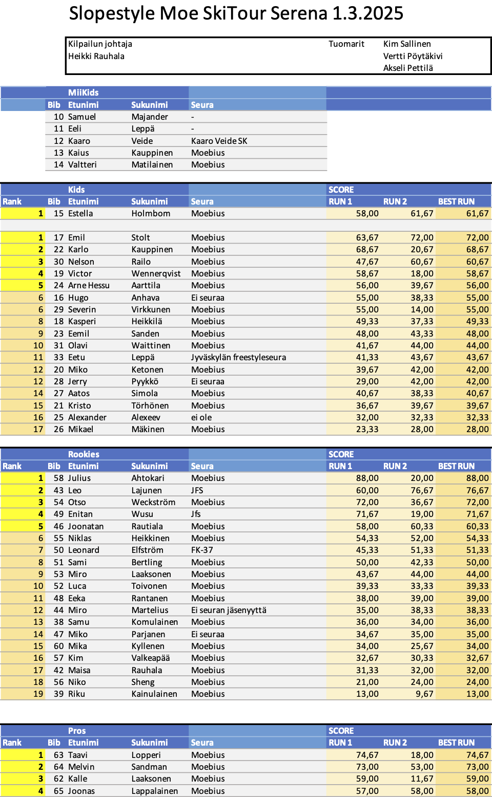
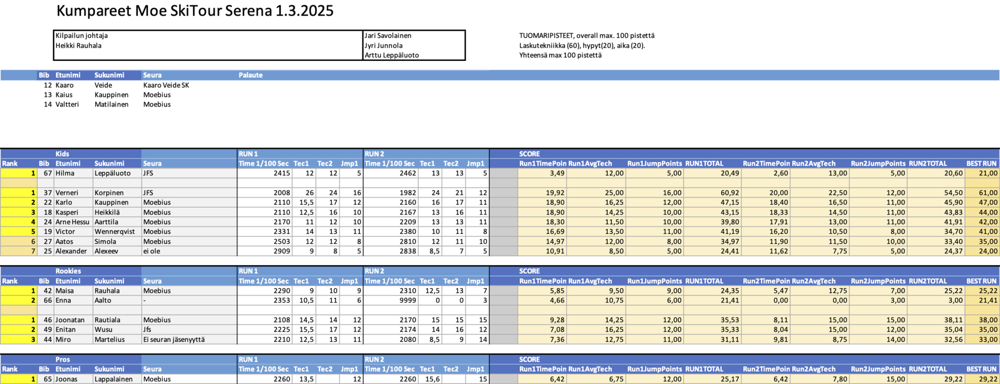

SkiTour Serena 1.3.2025
Tervetuloa Freestyleseura Moebius ry:n Moe SkiTour -kiertueen kolmanteen kilpailuun Serenaan lauantaina 1.3.2025 kello 10.00 alkaen!
Kilpailu
Serenassa kilpaillaan kaksi erillistä lajia: Slopestyle ja Moguls. Molempiin lajeihin ilmoittaudutaan samalla lomakkeella jossa valitaan lajit. Kannustamme kaikkia kilpailijoita osallistumaan molempiin lajeihin, molemmat ovat matalan kynnyksen kisoja! Tulokset lajeista ovat erilliset. Molemmat lajit lasketaan myös omina kisoinaan osaksi Moe SkiTourin kokonaiskilpailua.
Slopestyle
Päivä aloitetaan Slopestylekilpailulla. MiniKidsit laskevat ensin, jonka jälkeen Kids kokonaisuutena, ja viimeisenä Rookie ja Pro kokonaisuutena. MiniKids laskee pikkulinjassa, muut pyritään laskemaan isommassa linjassa jossa on ensin reilit ja lopussa hyppyri. Slopestylessä lasketaan kaksi laskua joista parempi jää voimaan. MiniKids ja Kids lasketaan ensin kokonaan jonka jälkeen Rookie ja Pro kokonaan.
Kumpareet
Slopestylen jälkeen järjestetään kumparekilpailu lumitilanteen salliessa. Kumpareissa lasketaan kaksi laskua, parempi jää voimaan.
Kumpareissa MiniKids ja Kids ensin molemmat kaksi laskua jonka jälkeen Rookie ja Pro kaksi laskua.
Sarjat
SkiTourin kisoissa kilpaillaan tyttöjen ja poikien sarjoissa ikäluokittain:
Nuorten sarjoissa palkitaan kolme parasta.
Skisportin ohjeiden mukaan MiniKids-sarjaa ei pisteytetä, vaan kaikki saavat diplomin ja henkilökohtaisen palautteen.
Ilmoittautuminen
Ilmoittautumiset keskiviikkoon 26.2.2025 tällä nettilomakkeella
.
Kilpailu on ennakkoon ilmoittautuneille Freestyleseura Moebius ry:n jäsenille ilmainen.
Muille ennakkoilmoittautumismaksu 10 € maksetaan Freestyleseura Moebius ry:n tilille. Voit osallistua molempiin lajeihin yhdellä maksulla. Tässä maksutiedot:
Summa: 10€
IBAN: FI09 8000 9710 2213 95
BIC: OKOYFIHH
Viestiin “SKITOUR3” ja ilmoittautujan nimi.
Paikan päällä viimehetken ilmoittautumismaksu kaikille 20 €.
Moe SkiTourin kisoihin voivat osallistua kaikki lajia harrastavat, osallistuminen ei edellytä seurajäsenyyttä. Tarvitset välineet freestylehiihtoa varten. Kypärä ja selkäpanssari ovat pakollisia. Sauvat eivät ole Moen omissa kisoissa pakolliset, mutta ilman sauvoja laskien saa vähemmän pisteitä.
Tarvitset myös kilpailutilanteen ja parkkilaskun kattavan vakuutuksen, kuten Ski Sport Finlandin Skipassin tai kilpailulisenssin ohessa myytävän Sporttiturva-vakuutuksen. Talman kilpailuun et tarvitse lisenssiä, mutta SkiTour-kiertueella yksi kisoista on kansallisen Fearless Finns -sarjan osakilpailu, johon osallistuaksesi tarvitset Skipassin jos olet 12-vuotias tai nuorempi tai Moebiuksen jäsen, tai kilpailulisenssin. Kannattaa hankkia vakuutus ja mahdollinen lisenssi nyt kauden alussa!
Lisätietoa lisenssivaihtoehdoista Skisport Finlandin sivuilta.
Aikataulusuunnitelma
10.00 Numeroliivien jako kilpailutoimistossa
10.15 Slopestyle kilpailijakokous
10.30 Lipunmyynti ja hissit aukeavat (vain hissit 1 ja 2 ja parkkirinne)
Vapaat harjoitukset
11.15 Slopestyle kilpailu alkaa, MiniKids ja Kids ensin, sitten Rookie ja Pro
Lounas 13-17 vesipuiston ravintola Graninassa. Kotiruokalounas toimitsijoille ja kisaajille alennushintaan numeroliiviä vastaan erilliseltä kassalta 12,50€.
14.30 Kumparekilpailun kilpailijakokous kumpareiden alapuolella
15.00 Kumparekilpailu alkaa, MiniKids ja Kids ensin, sitten Rookie ja Pro
17.00 Palkintojenjako
Talkoot
Tarvitsemme kilpailuiden järjestämiseen myös paljon talkooväkeä, talkooväen ilmoittautuminen talkooväen ilmoittautumislomakkeella
.
Hissiliput
Hiihtokeskuksen lipunmyynnistä saat päivälipun numeroliiviä vastaan alennushintaan 27€.
Hiihtokeskuksessa on käytössä Axess-etäkortti.
Yhteystiedot
Heikki Rauhala, 0407692277, info@moebius.fi, moebius.fi, @moebiusfreestyle
Tulokset SkiTour Sveitsin Hiihtokeskus 8.2.2025
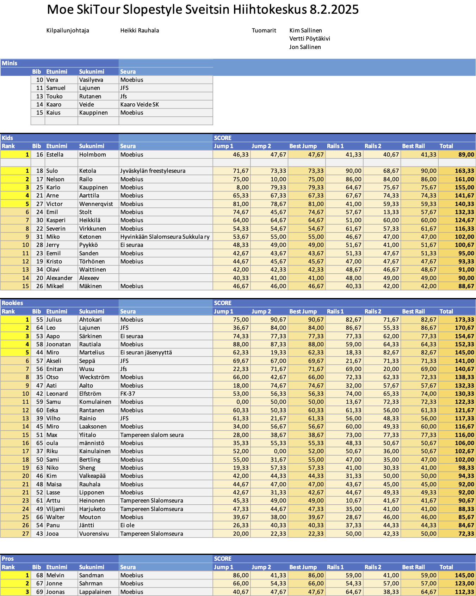
Talma Ski 5.4.2025
Talmassa kilpaillaan SkiTourin kauden päätösjamit Slopestylessä kelin mukaan.
Moe SkiTour Sveitsin Hiihtokeskus 8.2.2025
Tervetuloa Freestyleseura Moebius ry:n Moe SkiTour -kilpailuun Sveitsin Hiihtokeskukseen lauantaina 8.2.2025 kello 10 alkaen.
Kilpailu
Lajina on Slopestyle suksilla. Sveitsissä kilpailu lasketaan Kids, Rookies ja Pros sarjoissa kahdessa osassa:
MiniKidsit laskevat molemmat kilpailulaskunsa Rail Plazalla heti aamupäivällä.
Laskija voi valita suorituspaikat oman taitotasonsa mukaan. Suorituspaikkoja ja hyppyreitä löytyy kaiken tasoisille. Tuomaroitava alue ja elementit tarkennetaan kilpailijakokouksessa.
Sarjat
SkiTourilla kilpaillaan tyttöjen ja poikien sarjoissa ikäluokittain:
Nuorten sarjoissa palkitaan kolme parasta.
Skisportin ohjeiden mukaan MiniKids-sarjaa ei pisteytetä, vaan kaikki saavat diplomin ja henkilökohtaisen palautteen.
Ilmoittautuminen
Ilmoittautumiset keskiviikkoon 5.2.2025 mennessä tällä nettilomakkeella
.
Kilpailu on ennakkoon ilmoittautuneille Freestyleseura Moebius ry:n jäsenille ilmainen.
Muille ennakkoilmoittautumismaksu 10 € maksetaan Freestyleseura Moebius ry:n tilille
FI09 8000 9710 2213 95. Viestiin “SKITOUR2” ja ilmoittautujan nimi.
Paikan päällä viimehetken ilmoittautumismaksu kaikille 20 €.
Moebiusta edustaville kisat kuuluvat edelleen jäsenmaksuun, eli Moen jäsenenä (40€), pääset koko kisakiertueelle edullisimmin.
Moe SkiTourin kisoihin voivat osallistua kaikki lajia harrastavat, osallistuminen ei edellytä seurajäsenyyttä. Tarvitset välineet freestylehiihtoa varten. Kypärä ja selkäpanssari ovat pakollisia. Sauvat eivät ole Moen omissa kisoissa pakolliset, mutta ilman sauvoja laskien saa vähemmän pisteitä.
Tarvitset myös kilpailutilanteen ja parkkilaskun kattavan vakuutuksen, kuten Ski Sport Finlandin Skipassin tai kilpailulisenssin ohessa myytävän Sporttiturva-vakuutuksen. Talman kilpailuun et tarvitse lisenssiä, mutta SkiTour-kiertueella yksi kisoista on kansallisen Fearless Finns -sarjan osakilpailu, johon osallistuaksesi tarvitset Skipassin jos olet 12-vuotias tai nuorempi tai Moebiuksen jäsen, tai kilpailulisenssin. Kannattaa hankkia vakuutus ja mahdollinen lisenssi nyt kauden alussa!
Lisätietoa lisenssivaihtoehdoista Skisport Finlandin sivuilta.
Aikataulusuunnitelma
10.00 Lipunmyynti ja hissit aukeavat, numeroliivien jako alkaa hiihtokoulun mökillä
Vapaat harjoitukset
10.30 Kilpailijakokous Rail Plazan yläosassa
10.45 MiniKids kilpailu Rail Plazalla
11.00 Hypyt muut sarjat
Lounas Rinneravintolassa on tarjolla erinomaista lounasta
13.15 MiniKids palkintojenjako ravintolan edessä
13.30 Reilit Kids, Rookie & Avoin
16.30 Palkintojenjako rinneravintolan edessä
Talkoot
Tarvitsemme kilpailuiden järjestämiseen myös paljon talkooväkeä, talkooväen ilmoittautuminen talkooväen ilmoittautumislomakkeella
.
Hissiliput
Sveitsin hiihtokeskuksen vuokraamosta saat päivälipun numeroliiviä vastaan alennushintaan 32€.
Hiihtokeskuksessa on käytössä Axess-etäkortti.
Yhteystiedot
Heikki Rauhala, 0407692277, info@moebius.fi, moebius.fi, @moebiusfreestyle
Tulokset Moe SkiTour Talma 18.1.2025
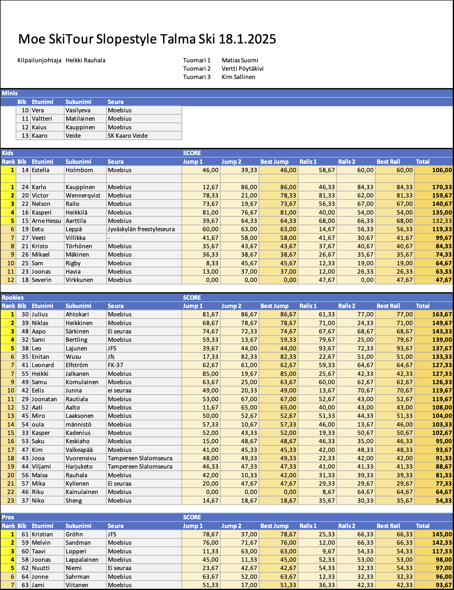
Kilpailukutsu Moe SkiTour Talma 18.1.2025
Tervetuloa Freestyleseura Moebius ry:n Moe SkiTour -kiertueen ensimmäiseen kilpailuun Talma Ski:hin lauantaina 18.1.2025 kello 10 alkaen.
Kilpailu
Lajina on Slopestyle suksilla. Talmassa kilpailu lasketaan Kids, Rookies ja Pro-sarjoissa kahdessa osassa:
MiniKids laskevat koko kilpailun popup-parkissa josta löytyy putki, pressiboksi ja hyppyri samasta linjasta. MiniKids laskevat molemmat kilpailulaskut
Laskija voi valita suorituspaikat oman taitotasonsa mukaan. Suorituspaikkoja ja hyppyreitä löytyy kaiken tasoisille. Tuomaroitava alue tarkennetaan kilpailijakokouksessa.
Sarjat
SkiTourin kisoissa kilpaillaan erikseen tyttöjen ja poikien sarjoissa ikäluokittain:
Nuorten sarjoissa palkitaan kolme parasta.
Skisportin ohjeiden mukaan MiniKids-sarjaa ei pisteytetä, vaan kaikki saavat diplomin ja henkilökohtaisen palautteen.
Ilmoittautuminen
Ilmoittautumiset keskiviikkoon 15.1.2024 mennessä tällä nettilomakkeella
.
Kilpailu on ennakkoon ilmoittautuneille Freestyleseura Moebius ry:n jäsenille ilmainen.
Muille ennakkoilmoittautumismaksu 8 € maksetaan Freestyleseura Moebius ry:n tilille:
IBAN: FI09 8000 9710 2213 95
BIC: OKOYFIHH
Viestiin “SKITOUR1” ja ilmoittautujan nimi.
Paikan päällä viimehetken ilmoittautumismaksu kaikille 12 €.
Seuraavissa kisoissa maksut nousevat ennakkoilmoittautuneille 10€ ja paikan päällä ilmoittautuessa 20€. Moelaisille kisat kuuluvat edelleen jäsenmaksuun, niin Moen jäseneenä (40€), pääset koko kisakiertueelle edullisimmin.
Moe SkiTourin kisoihin voivat osallistua kaikki lajia harrastavat, osallistuminen ei edellytä seurajäsenyyttä. Tarvitset välineet freestylehiihtoa varten. Kypärä ja selkäpanssari ovat pakollisia. Sauvat eivät ole Moen omissa kisoissa pakolliset, mutta ilman sauvoja laskien saa vähemmän pisteitä.
Tarvitset myös kilpailutilanteen ja parkkilaskun kattavan vakuutuksen, kuten Ski Sport Finlandin Skipassin tai kilpailulisenssin ohessa myytävän Sporttiturva-vakuutuksen. Talman kilpailuun et tarvitse lisenssiä, mutta SkiTour-kiertueella yksi kisoista on kansallisen Fearless Finns -sarjan osakilpailu, johon osallistuaksesi tarvitset Skipassin jos olet 12-vuotias tai nuorempi tai Moebiuksen jäsen, tai kilpailulisenssin. Kannattaa hankkia vakuutus ja mahdollinen lisenssi nyt kauden alussa!
Lisätietoa lisenssivaihtoehdoista Skisport Finlandin sivuilta.
Aikataulusuunnitelma
10.00 numeroliivien jako mutterissa kahvilan terassin vieressä, lipunmyynti ja hissit aukeavat.
Vapaat harjoitukset
10.30 Kilpailijakokous etuparkin hissien ala-asemalla
10.45 MiniKids-sarja popup-parkissa
11.05 Hypyt järjestyksessä Kids, Rookie & Pro
Lounas Suosituksena keittolounas jota on nopeasti tarjolla, mene syömään oman hyppylaskusi jälkeen!
MiniKids palkintojenjako kun muiden sarjojen hypyt on laskettu
13.30 Reilit järjestyksessä Kids, Rookie & Pro
16.30 Palkintojenjako etuparkien hissien ala-asemalla
Talkoot
Tarvitsemme kilpailuiden järjestämiseen myös paljon talkooväkeä, talkooväen ilmoittautuminen talkooväen ilmoittautumislomakkeella
.
Hissiliput
Hiihtokeskuksen lipunmyynnistä saat päivälipun numeroliiviä vastaan hintaan 30€.
Hiihtokeskuksessa on käytössä Axess-etäkortti.
Yhteystiedot
Heikki Rauhala, 0407692277, info@moebius.fi, moebius.fi, @moebiusfreestyle, facebook.com/moebiusfreestyle
Viime kauden SkiTour tapahtumat löydät täältä.